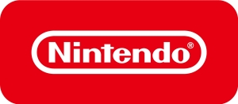

インディーゲーム
「選考出展」
エントリー募集のご案内
インディーゲームの世界では常に新しいゲームのアイデアが生まれ、ゲーム業界全体に新たな風を吹き込んでいます。東京ゲームショウでは協賛企業から協力を得て、インディーゲーム開発者を支援する目的で、「インディーゲームカテゴリー」に無料で出展できる、インディーゲーム「選考出展」枠を設けます。
インディーゲーム「選考出展」の出展社は、そのままインディーゲームのピッチイベント「センス・オブ・ワンダー ナイト（SOWN）」にエントリーすることになります。選考により、特に優れた8作品がSOWNファイナリストとして選ばれます。ファイナリストには、会期中に開かれる「センス・オブ・ワンダー ナイト（SOWN）」で作品をプレゼンテーションをしていただきます。SOWNの模様はオンラインで配信し、リモートでプレゼンテーションを行うことも可能です。
-
インディーゲーム「選考出展」をご希望の場合は、以下にある、インディーゲーム「選考出展」とSOWNの目的をご覧いただき、ぜひご応募ください。出展に際し事前に審査員による選定が行われ、合格した作品が、インディーゲーム「選考出展」として出展することができます。
本企画の条件に当てはまらない場合は、有料で「インディーゲームカテゴリー」に出展することをご検討ください。有料の出展申込締切は2021年6月25日（金）です。なお、インディーゲーム「選考出展」の合格通知は7月中旬を予定しています。落選した方は出展申込締切後でも、有料で「インディーゲームカテゴリー」にお申込みいただくことができます。 -
SPECIAL THANKS
本企画はソニー・インタラクティブエンタテインメント（SIE）と任天堂の協賛により実施されます。
-

-

インディーゲーム「選考出展」と
SOWNの目的
● 実験的で、創造的な、ゲームデザインやアイデアを含んだゲームを紹介すること。
● ゲームにおける「センス・オブ・ワンダー」の重要性を紹介し、ゲーム産業の活性化を図ること。
● 実験的で、創造的なゲームを開発している人たちに、将来へのチャンスの場を提供すること。
● ゲームデザインに新しい領域を作り出していくこと。
発表を期待されているのは、プロトタイプのデモや、実験的な要素を持った発売済もしくは発売予定のゲーム、既存の概念を超えた自由な発想で開発したゲームといったものです。プロやアマチュア、学生といった区別もまったくありません。ベンチャー企業のゲームや、個人開発やサークル活動・同人ゲームなどの応募も歓迎します。
重要
「センス・オブ・ワンダー ナイト」は、Game Developers Conferenceで、2001年に始まった「Experimental Gameplay Workshop」から、多くのインスピレーションを受けています。このワークショップを成功させてきた多くの関係者ならびに友人達に、感謝の意を表します。
以下の５つの項目の
いずれかに当てはまる ゲームの
エントリーを募集します！
-
新感覚
これまで見たことないような新しい体験を形作っているゲーム
自然言語処理、物理演算、画像認識、ジェスチャーコントロールなど、これまで利用されてこなかった技術をうまくゲームに応用した新しい種類の体験を提供するゲーム
-
新常識
ゲームという常識を揺さぶってしまうようなゲーム
ゲームの体験を通じて、プレイ後には、世界がちょっと変わって見えてしまうようなゲームそのものの新しい表現方法を模索しているようなゲーム
-
創発性
創発的な要素を持っているようなゲーム
ＡＩの相互作用や、ツール的な要素や、ソーシャル性といった要素を持たせることによってユーザーの活動自体をゲームが巻き込んでしまうようなゲーム
-
意欲刺激
多くの人が今すぐプレイしたいという感銘を与えられるゲーム
新しい体験を誰もが自分自身も体験したいと考え、そのために手元にとどめておきたいと思わず感じさせてしまうようなゲーム
-
驚き
とにかくなんだか訳が分からないけれど、すごいもの
とにかく観た瞬間に「これはスゴイ・・・」と感銘を与えられるゲーム
次のようなゲームは、インディーゲーム「選考出展」及びSOWNの対象となりませんのでご注意ください。
インディーゲーム「選考出展」の概要
-
出展形式
-
オンライン出展
-
会期
-
2021年9月30日（木）～2021年10月3日（日）
※ただし出展社の情報は2021年9月1日（水）から東京ゲームショウ2021 オンライン上で公開予定です。
-
選考
-
あり
-
出展料
-
無料
-
選考の流れ
-
① 選考出展（無料）を希望する場合は、まず下記の「選考出展の応募条件」や「出展可能な作品」に該当するかどうかを各自で判断して、下にある「応募フォームへ」ボタンから専用フォームに必要事項を入力してください。複数タイトルを選考出展に応募する場合は、タイトルごとに応募してください。
② 応募締切後、入力された内容から作品を選考します。選ばれた個人・法人には選考出展が可能であることを直接ご連絡します。※選考条件は「出展可能な作品」をご覧ください。
③ 選考出展が認められたタイトルは、自動的に「センス・オブ・ワンダー ナイト（SOWN）」の応募作品としてエントリーされます。SOWNはインディー選考出展社の中から特に優れた作品を選ぶアイデアコンテストで、10月2日（土）にプレゼンテーションする機会が与えられます（SOWNはオンライン配信。リモートでのプレゼンも可能）。SOWNの詳細についてはコチラをご覧ください。
-
選考出展の応募条件
-
・出展する個人・団体の年間売上について。
法人：5000万円もしくは50万USドル程度以下であること。
個人：1000万円もしくは10万USドル程度以下であること。
・出展する団体が法人の場合、資本的に独立していること（例えば、大手ゲーム会社の資本が入っていないこと）。
-
出展可能な作品
-
・完全オリジナルなゲーム（二次創作コンテンツは許諾の有無にかかわらず出展できません）。
・応募者が開発の権利を有するプラットフォーム向けに制作されたもの。
・CESA倫理規定、CERO倫理規定に準じたもの、かつ以下のいずれにも相当しないもの。①CERO倫理規定 別表3「禁止表現」
（ https://www.cero.gr.jp/relays/download/3/43/2/291/?file=/files/libs/291/202010162348223320.pdf ）に抵触、または抵触する恐れのある表現が含まれている
②CEROの審査で「Z」区分レーティングを受けた作品、もしくは「Z」区分に相当する表現が含まれている可能性がある
③海外で既に発表されており、海外審査機関（ESRBなど）で「17+」（MATURE）区分の指定を受けている
④海外で発表予定で、海外審査機関（ESRBなど）で「17+」（MATURE）区分の指定を受ける可能性がある（残虐性が強く「13+」（TEEN）区分に相当するとは思えない作品）
インディーゲーム「選考出展」応募要項
-
応募締切
-
2021年6月18日（金）＜日本時間＞
-
応募方法
-
インディーゲーム「選考出展」専用応募フォームにエントリーしてください。
-
応募資格
-
国籍、年齢、職業（学生、ゲーム制作者など）、一切不問
-
スケジュール
-
<1>合格者通知：2021年7月中旬
<2>SOWNファイナリスト合格者通知：2021年8月中旬
-
注意事項
-
SOWNファイナリストは、インディーゲーム「選考出展」（無料）の中から選考いたします。
-
問い合わせ先
-
インディーゲーム「選考出展」事務局
indiegame@eventinfo.tokyo
※恐れいりますがメールでの対応のみとさせていただきます。
出展・参加可能なメニューについて
東京ゲームショウ2021 オンラインでは、出展社に基本となるメニューの他、様々な有料メニューをご用意しています。例えば、別途料金をお支払いいただくことにより、「プレス・インフルエンサー向け試遊・展示」などを実施することができます。インディーゲーム「選考出展」（無料）の皆様も別途料金をお支払いいただくことで、これらのご利用が可能です。受付方法について詳しくは、インディーゲーム「選考出展」（無料）に選考された皆様にご案内させていただきます。なお、出展・参加可能なメニューについて、詳しくは「出展のご案内」のP17をご覧ください。
センス・オブ・ワンダー ナイト（SOWN）とは
「センス・オブ・ワンダー ナイト（SOWN）」は、”見た瞬間、コンセプトを聞いた瞬間に、誰もがはっと、自分の世界が何か変わるような感覚”＝「センス・オブ・ワンダー」を引き起こすようなゲームのアイデアを発掘し、ゲーム開発者に東京ゲームショウでプレゼンテーションの機会を提供する企画で、今年で14回目を迎えます。
2020年はインディーゲーム「選考出展」として選ばれた80団体・個人の中から、選考を経て、8組がファイナリストとして選ばれました。国別の内訳は日本から2作品、カナダ、ペルー、スイス、デンマーク、ポーランド、インドネシアからそれぞれ1組でした。「センス・オブ・ワンダー ナイト 2020」は2020年9月25日（金）に開催され、その模様はライブ配信されました。コロナ禍での開催となったため、海外のファイナリストにはオンラインでプレゼンテーションをしてもらいました。
最後に”Audience Award Grand Prix” “Best Technological Game Award” “Best Arts Award” “Best Experimental Game Award” “Best Game Design Award” “Best Presentation Award”が表彰され、盛況のうちに終了しました。イベント終了後には「インディーナイト パーティー」がオンラインで開催され、インディーゲーム開発者らが交流を楽しみました。
SOWNでのプレゼンテーションを希望する方は、インディーゲーム「選考出展」にご応募ください。応募の中から選考を経て、合格者にはインディーゲーム「選考出展」に出展する資格が与えられます。インディーゲーム「選考出展」の中から、さらに選考が行われ、SOWNでプレゼンテーションができるファイナリストが決まります。
※昨年の「センス・オブ・ワンダー ナイト 2020」の模様はYouTubeでご覧いただけます。
https://www.youtube.com/watch?v=lP2wbYwrjps&t=3s
「センス・オブ・ワンダー ナイト 2021」
プレゼンテーション概要
-
開催日
-
2021年10月2日（土） 11：00～13：00 ＜日本時間＞を予定
-
会場
-
オンライン開催（ライブ配信予定）
-
賞金
-
大賞（ Audience Award Grand Prix ） 3,000 USドル
各賞（Best Game Design Award, 他） 500 USドル
-
当日の注意事項
-
・ プレゼンターはインディーゲーム「選考出展」に出展していることが前提となります。
・ プレゼンテーションの時間は10分です。制限時間内にゲームのデモやプレゼンテーションを行ってください。（日本語⇔英語の同時通訳があります）
・ 海外および遠隔地のファイナリストは、オンラインでプレゼンテーションを行うか、あらかじめ制作したプレゼンテーション動画を発表する形でご参加いただく予定です。
・ プレゼンテーションは動画配信し、応募内容（ゲーム概要）についても東京ゲームショウ2021 オンラインで公開します。
インディーゲーム「選考出展」
およびSOWNが対象としないゲーム
以下のようなゲームは、SOWN応募の対象外となります。
ゲームそのものに必ずしも関係ない要素が中心となっているもの
これまでになかったバックグラウンドの設定やシチュエーション、キャラクターデザイン、グラフィック、ストーリー、オーディオといったゲームを構成する一要素が驚きの中心である場合
すでに存在しているジャンルやそれを単に混ぜたりしたことで生み出された新ジャンル
ただし、それにも関わらず、本当に新しいゲーム体験を作り出している場合は除きます
特定の客層だけをターゲットにしていることが新しい理由である場合
女性のためだけのゲームや、老人向けといったもの。ただし、それでも多くの人が感銘を受けるようなものの場合は除きます
ゲームプレイに影響を与えない、純技術的イノベーション、実験的ビジネスモデル、流通のメカニズム
それらを完全に排除するものではありませんが、ゲーム体験に直接かつ明快に変えることが明らかになっている必要があります
審査員紹介
近日公開予定
問い合わせ先
インディーゲーム「選考出展」事務局
indiegame@eventinfo.tokyo
※恐れいりますがメールでの対応のみとさせていただきます。